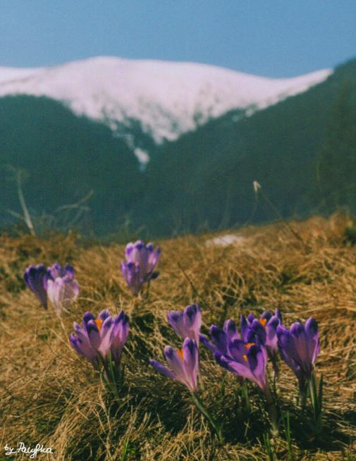

Adam Asnyk (1838 - 1897)
Ranek w górach
Mieczysławowi Pawlikowskiemu na pamiątkę chwil wspólnie
spędzonych w Zakopanem
Wyzłocone słońcem szczyty
Już różowo w górze płoną,
I pogodnie lśnią błękity
Nad pogiętych skał koroną.
W dole lasy, skryte w cieniu,
Toną jeszcze w mgle perłowej,
Co w porannym oswietleniu
Mknie się z wolna przez parowy.
Lecz już wietrzyk mgłę rozpędza,
I ta rwie się w chmurek stada......
Jak pajęcza, wiotka przędza
Na krawędziach skał osiada.
A z pod sinej tej zasłony
Świat przegląda coraz szerzej,
Z nocnych, cichych snów zbudzony,
Taki jasny, wonny , świeży!
Wszystko srebrzy się dokoła
Pod perlistą, bujną rosą;
Świerki, trawy, mchy i zioła
Balsamiczny zapach niosą.
A blask spływa wciąż gorętszy,
Coraz głębiej oko tonie;
Cudowności świat się piętrzy
W wyzłoconej swej koronie.
Góry wyszły, jak z kąpieli,
I swym łonem świecą czystem,
W granitowej świecą bieli,
W tem powietrzu przeźroczystem.
Każdy zakręt, każdy załom
Wyskakuje żywy , dumny,
Słońce dało życie skałom,
Rzeźbiąc światłem ich kolumny.
Wszystko skrzy się, wszystko mieni,
Wszystko w oczach przeistacza;
Gra przelotnych barw i cieni
Coraz szerszy krąg zatacza.
Już zdrój srebną pianą bryzga,
Gdy po ostrych głazach warczy;
Już się żywszy odblask ślizga
Po jeziorek sinej tarczy.
Już pokraśniał rąbek lasu,
Już sie wdzięczy i usmiecha
Brzeg doliny, a z szałasu
Dolatują śpiewne echa.
Przez zielone łąk kobierce
Dzwoniąc, idą paść się trzody....
jakaś rozkosz spływa w serce,
Powiew szczęścia i swobody.
Pierś się wznosi, pierś się wzdyma,
I powietrze chciwie chwyta;
Dusza wybiec chce oczyma,
Upojona a nie syta;
Niby lecieć chce skrzydlata,
Obudzona jak z zaklęcia,
I tę cała piękność świata
Chce uchwycić w swe objęcia.
|

Krokusy na Polanie Chochołowskiej
Fot. Pacyfka
|